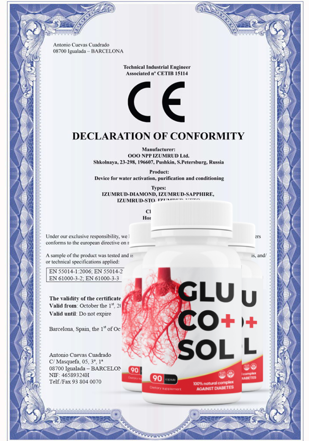
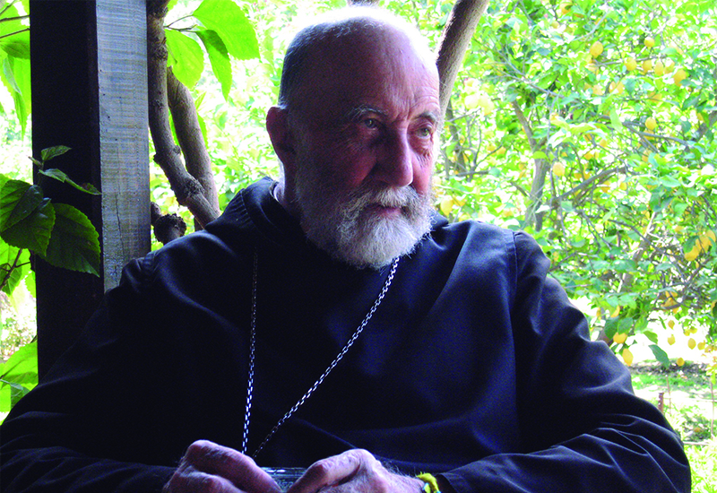
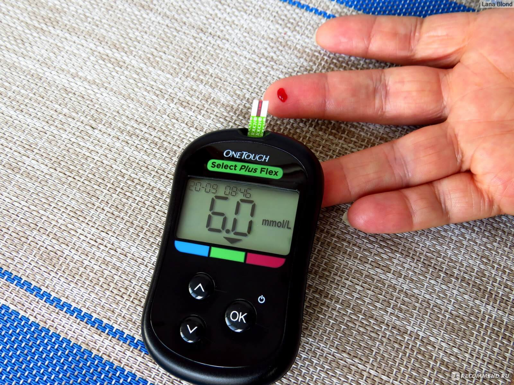
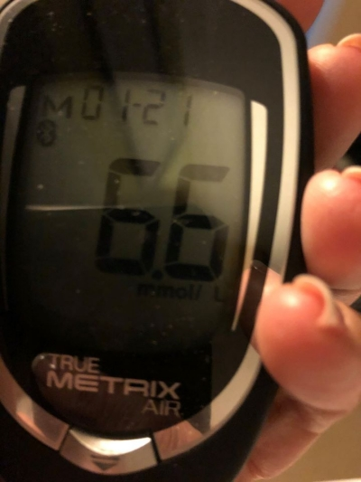
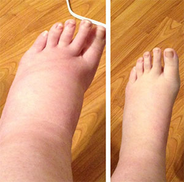

Dopo che diversi pazienti della zona di Firenze si sono completamente ripresi dal diabete,
senza insulina e senza farmaci, un team di medici italiani ha deciso di indagare sul fenomeno.
Sono arrivati al Monastero di Montecassino, dove hanno incontrato un uomo che ha
completamente cambiato la loro percezione della malattia.
Padre Nicola, abate del monastero da oltre 40 anni, ha accettato per la prima volta di
parlare pubblicamente della ricetta antica, tenuta segreta da intere generazioni di monaci.
"Abbiamo pregato a lungo prima di prendere questa decisione. Non possiamo più tacere quando vediamo quante
persone soffrono. Dio ci ha dato questa conoscenza e dobbiamo condividerla con chi ne ha bisogno", ha detto
Padre Nicola.
In Italia, il numero di casi legati a gravi complicazioni del diabete sta crescendo in modo allarmante. Evidentemente, la banale debolezza, che molti per anni considerano un "sintomo normale della malattia", si rivela un segnale di allarme mortale: una distruzione silenziosa dei reni, che porta rapidamente all'insufficienza renale e, infine, alla morte. Questa è la dura realtà per coloro che scoprono troppo tardi quanto sia effettivamente pericoloso il diabete.
Durante una visita non ufficiale di alcuni medici al Monastero di Montecassino, hanno appreso dell'esistenza di una persona straordinaria, ricercata da decine di pazienti disperati: Padre Nicola, un monaco che cura il diabete non con pillole o insulina, ma con un antico metodo monastico, tramandato di generazione in generazione.
Così, tutto il paese ha saputo di Padre Nicola, un monaco rispettato e un guaritore dal cuore delle Alpi. Non appare in interviste. Non usa i social media. Non cerca la fama. Non vuole soldi. Ma su richiesta dei medici, che hanno visto i suoi risultati con i propri occhi, ha accettato di svelare i segreti del suo metodo.
Siamo riusciti a ottenere i dettagli della sua formula, un approccio che cambia tutto: non maschera i sintomi, ma stabilizza la glicemia, protegge gli organi interni e innesca un processo naturale di rigenerazione. Questa non è la medicina del futuro. È una verità dimenticata che sta già salvando vite.
Padre Nicola: "Nel 2026, siamo alle soglie di una nuova ondata di
complicazioni devastanti legate al diabete.
La minaccia più insidiosa è il danno ai reni. La malattia progredisce in silenzio, senza sintomi
evidenti, e quando compaiono, spesso è troppo tardi: gli organi sono già gravemente danneggiati e, nella
maggior parte dei casi, la fine è tragica.
Ecco perché nel nostro monastero utilizziamo un metodo completamente diverso: non nasconde i sintomi, ma
agisce direttamente sulla causa. Protegge gli organi dall'attacco del glucosio e dallo stress
ossidativo.
La nostra missione è fermare la distruzione, avviare la rigenerazione e ripristinare la sensibilità all'insulina. Quando le cellule ricominciano a reagire, il corpo regola da solo la glicemia. Lo vediamo ogni giorno. E sappiamo: la guarigione è possibile."
Padre Nicola è convinto: chiunque può liberarsi per sempre dei picchi di zucchero nel sangue e della distruzione degli organi causata dal diabete, senza iniezioni, senza pillole, senza cliniche costose o misurazioni costanti. Tutto può essere fatto a casa. A differenza dei farmaci da farmacia, che spesso fanno più male che bene, il nostro metodo si basa su un meccanismo naturale di rigenerazione: aiuta il corpo a riprendere la propria produzione di insulina e ripristina la sensibilità delle cellule, senza sostanze chimiche, senza ormoni, senza effetti collaterali.
Questa non è farmacologia. È un'antica medicina monastica che ha dimostrato la sua efficacia nel corso dei secoli, e oggi è accessibile a chiunque voglia non solo sopravvivere, ma veramente guarire.
— La metformina e l'insulina non risolvono la causa del diabete. Credere che siano sufficienti per guarire è
un'illusione pericolosa.
I farmaci che abbassano solo la glicemia non salvano vite, anzi, spesso le accorciano più del diabete
stesso.
Padre Nicola:
— Credete davvero che l'insulina e la metformina possano curare il diabete? È un'illusione pericolosa. Possono aiutare solo temporaneamente, ma не eliminano la causa della malattia. Con il tempo, questo tipo di trattamento fa sì che l'organismo dimentichi come funzionare da solo. I recettori perdono la loro sensibilità e il corpo diventa dipendente. Ma c'è anche qualcos'altro: state distruggendo silenziosamente i vostri organi. Tutti sanno che il glucosio corrode i tessuti dall'interno, ma i reni soffrono di più.
E il problema è che i reni non hanno recettori del dolore, quindi una persona non si rende conto di nulla finché non è troppo tardi. Molti farmaci che abbassano la glicemia accelerano questo processo distruttivo, aumentando il rischio di insufficienza renale, complicazioni e morte fino a 7-15 volte.
Ho visto immagini scioccanti: reni completamente distrutti in persone con diagnosi di diabete da soli due anni. Un tempo si pensava che questo tipo di nefropatia si verificasse solo in pazienti gravemente malati e di lunga data. Oggi, purtroppo, la troviamo anche in pazienti con pre-diabete. Per questo vi dico: non aspettate che il corpo urli quando è già troppo tardi. Ascoltatelo prima. E aiutatelo con ciò che lo guarisce, non con ciò che lo sopprime.
La stanchezza e la debolezza costanti nel diabete indicano quasi al 100% una fase grave di ossidazione degli organi a causa del glucosio. E i reni soffrono di più: a causa della mancanza di terminazioni nervose, il processo progredisce segretamente, fino a portare alla necrosi dei tessuti e alla morte.
Padre Nicola: — Pensateci bene, figli miei. Bastano poche settimane perché la distruzione dei tessuti progredisca così rapidamente che i danni diventino irreversibili e ogni tentativo di guarigione perda di significato. E l'unica strada che rimarrà sarà un apparecchio per la dialisi... o la morte.
So che sono parole dure. Ma ignorare i segnali del corpo è ciò che porta alle complicazioni più gravi del diabete. Se avete la glicemia alta e non fate nulla, vi state dirigendo verso la disabilità, la sofferenza e, molto spesso, verso la fine.
Nel nostro monastero abbiamo visto le conseguenze: solo nel 2025, oltre 170.000 diabetici sono diventati pazienti con diagnosi di "insufficienza renale acuta", di cui 60.000 non sono sopravvissuti fino all'attuale 2026! Quanto tempo vi resta? Dipende solo da quanto siete disposti a ignorare i segnali del vostro corpo. Ma se ascoltate ora, potete ancora scegliere la via della guarigione.
E se è iniziata la distruzione degli organi e dei tessuti interni, allora nessuna automedicazione e tanto meno i normali farmaci vi aiuteranno più.
Elenco i sintomi più affidabili dalla mia pratica:
- Stanchezza e debolezza costanti, anche quando la glicemia è normale;
- Sensazione di spossatezza al mattino, pesantezza nel corpo;
- Gonfiore al mattino, segni dei calzini, "borse" sotto gli occhi;
- Fluttuazioni improvvise della pressione sanguigna, vertigini senza causa;
- Secchezza delle fauci, sete anche dopo aver bevuto acqua;
- Minzione frequente;
- Dolori nella zona lombare, sensazione di pressione nella parte bassa della schiena;
- Nausea periodica, sapore sgradevole in bocca;
- Crampi notturni, formicolio alle dita;
- Cambiamento del colore delle urine, comparsa di schiuma;
— Tutti gli organi e i tessuti vengono gradualmente danneggiati dall'eccesso di glucosio nel sangue. L'iperglicemia agisce in silenzio, ma i suoi effetti possono essere devastanti. Vi prego: ascoltate i segnali del corpo prima che sia troppo tardi.
Quando i danni diventano irreversibili, una persona si scontra con conseguenze terribili: collasso renale, paralisi, cancrena, necrosi, amputazione, perdita della vista, infarto, ictus e persino morte improvvisa. Non è un'esagerazione. È la realtà di chi non ha voluto ascoltare.
Guardate queste immagini. Queste sono le conseguenze per coloro che hanno ignorato i sintomi. Volete davvero rischiare la stessa fine?
Fermatevi. Notate. E fate la scelta giusta, prima che sia troppo tardi.
Gli aumenti costanti della glicemia corrodono lentamente ma inesorabilmente i tessuti degli organi e dei vasi sanguigni. Ogni mese, decine di migliaia di persone perdono la vita o diventano disabili a causa delle complicazioni del diabete, senza mai avere una vera possibilità di guarigione. L'ossidazione causata dal glucosio non si ferma da sola. Non scompare con il tempo. Progredisce – silenziosamente – finché non è troppo tardi. Per questo vi dico con tutto il cuore: agite ora. Finché potete ancora. Finché il corpo può ancora essere salvato.
— Ognuna di queste persone ha pensato: "A me non succederà". Ma la realtà è sotto i nostri occhi: danni cellulari, ossidazione degli organi, sofferenza... e, alla fine, una morte silenziosa. Oltre il 90% delle persone che ci hanno lasciato non hanno agito in tempo. Il glucosio distrugge dall'interno e lo fa in modo invisibile. Ignorare i sintomi significa, passo dopo passo, rinunciare alla propria vita.
Pensateci bene. Anche se avete solo lievi aumenti di glicemia, il tempo per salvare il vostro corpo è limitato. Avete bisogno ora della strada giusta, prima che i danni diventino irreversibili.
E per coloro che soffrono di diabete da più di 1 o 2 anni, il rischio è ancora maggiore. Il glucosio consuma gli organi, i vasi sanguigni, la vista, il sistema nervoso. Le complicazioni possono iniziare in qualsiasi momento. C'è solo una possibilità di salvezza: rimuovere il glucosio dai tessuti, iniziare la rigenerazione e restituire al corpo la capacità di guarire, prima che sia troppo tardi.
Alcuni esempi di guarigione con questo metodo sono semplicemente incredibili! I medici stavano per amputare la gamba di Sofia Rossi, a soli 55 anni, ma è riuscita a evitare le complicazioni più gravi e si è completamente liberata dei picchi di glicemia grazie al rimedio naturale inviato da Padre Nicola dal Monastero di Montecassino. Ecco cosa ci ha raccontato...
Dopo aver consultato decine di medici, Sofia Rossi ha ricevuto una terribile sentenza: nel 2025 le è stato diagnosticato il diabete di tipo 2, ma nessuno l'aveva avvertita di quanto velocemente questa malattia avrebbe distrutto la sua salute. Tutto è iniziato con sintomi lievi, ma in soli 2 mesi la situazione è peggiorata, è comparsa la cancrena alla gamba e i medici hanno proposto l'amputazione.
I medici le dissero: "I reni sono al limite. Purtroppo dovremo amputare la gamba. Non c'è più niente da fare". Non aveva famiglia, ma non si è arresa e ha deciso di lottare fino alla fine.
"Ho sempre avuto una vita attiva, lavoravo dalla mattina alla sera, ma tutto è cambiato in pochi mesi... All'inizio avevo costantemente sete, ero stanca e avevo le vertigini, andavo in bagno sempre più spesso. Pensavo fosse stress. Ma un giorno sono svenuta per strada! Mi sono svegliata in ospedale. I medici mi hanno detto che la glicemia era salita bruscamente e che i reni non funzionavano più normalmente."
Non potevo immaginare che tutto sarebbe peggiorato così in fretta... Solo dopo un mese sono comparse ulcere sulle gambe, e poi la gamba destra ha iniziato a diventare nera! Mi sono spaventata a morte! I medici mi hanno detto: "Bisogna amputare immediatamente. Altrimenti l'infezione si diffonderà e morirai". Stavo per accettare... Ma all'ultimo momento ho sentito parlare di Padre Nicola, un monaco del Monastero di Montecassino, che aiuta i malati di diabete con una ricetta antica, tramandata di generazione in generazione. L'ho contattato. Mi hanno risposto. E presto ho ricevuto il rimedio naturale che lui stesso prepara e invia dal monastero. Ho iniziato il trattamento.
Sono passati quattro mesi e ancora non ci posso credere! Ho recuperato i miei reni. Ho curato il diabete. La mia glicemia è stabile, posso camminare di nuovo — e, soprattutto, ho salvato la mia gamba e non sono diventata disabile. Padre Nicola mi ha salvato la vita. Gli sarò grata per sempre.
Sofia Rossi, 55 anniUn altro caso chiaro è quello di Marco Bianchi, che a soli 40 anni, durante una visita medica di routine, è stato casualmente diagnosticato con il diabete.
E nonostante il trattamento prescritto, le sue condizioni peggioravano visibilmente. Solo dopo 3 mesi ha perso bruscamente 10 chilogrammi, ha iniziato ad avere forti dolori alla schiena, la sua vista è drasticamente peggiorata e, nel giro di un mese, i reni hanno quasi completamente smesso di funzionare!
Pieno di speranza, Marco ha deciso di seguire il trattamento di Padre Nicola, e dopo 3 settimane i medici non potevano credere ai loro occhi! LA GLICEMIA SI È STABILIZZATA, I RENI SI SONO RIPRESI E, SOPRATTUTTO — I MEDICI HANNO ANNULLATO LA DIALISI!
Siamo riusciti a contattarlo ed ecco cosa ci ha raccontato:
"Grazie per avermelo chiesto. Forse questa storia aiuterà anche qualcun altro... Mi sentivo in salute e non sospettavo nemmeno di avere il diabete. Ma durante una visita di routine, i medici mi hanno detto che avevo il diabete di tipo 2 e che erano già iniziati i problemi ai reni.
All'inizio era solo stanchezza e debolezza, che molti considerano normale con il diabete. Ma dopo 3 mesi tutto è crollato bruscamente. Mi svegliavo di notte con forti dolori brucianti nella zona lombare e non riuscivo a muovermi! I medici hanno detto: "Non c'è altra soluzione. O un trapianto di rene, o una macchina per tutta la vita!" Ero terrorizzato al pensiero di poter morire...
Ma grazie a Dio, mia moglie non mi ha abbandonato! Ha trovato Padre Nicola, gli ha inviato le mie analisi e lui ha risposto: "I reni possono ancora essere salvati, ma il diabete deve essere fermato immediatamente — prima che sia troppo tardi!"
Dopo aver iniziato il trattamento inviato da Padre Nicola, la glicemia si è normalizzata dal secondo giorno! Dopo una settimana il dolore è scomparso e la funzione renale è tornata alla normalità! Il ciclo completo di trattamento è durato 60 giorni e sono tornato alla vita!!! La cosa più importante è che ho evitato l'operazione e ho recuperato completamente la mia salute, liberandomi del diabete e dei picchi di glicemia. Se non fosse stato per mia moglie e Padre Nicola, non so come sarebbe finita... Sarò loro grato per sempre!
Marco Bianchi, 40 anniChiunque abbia provato questo rimedio da solo è riuscito a recuperare la salute perduta, a ripristinare l'equilibrio ormonale, a liberarsi completamente dei picchi di glicemia e a evitare conseguenze irreparabili, inclusa la distruzione degli organi. E queste persone sono migliaia!
La ricetta di Padre Nicola, che protegge gli organi dagli effetti distruttivi del glucosio, ripristina completamente i recettori dell'insulina e normalizza naturalmente i livelli di zucchero nel sangue! Non scompare solo il diabete, ma migliora anche la salute generale!
Padre Nicola:
— La situazione con il diabete e le sue complicazioni è diventata estremamente seria. Ecco perché nel nostro monastero conserviamo e perfezioniamo una ricetta speciale. La sua efficacia è incomparabile, perché non si limita al controllo della glicemia, ma elimina la causa stessa del diabete, rigenera i recettori e ripristina l'equilibrio ormonale.
Abbiamo cercato per anni la combinazione giusta — e nessuna pillola, nessuna iniezione, nessuna dieta può fornire lo stesso risultato.
La ricetta stessa è semplice, ma la selezione accurata degli ingredienti è essenziale. Ogni milligrammo conta. Solo con l'attenta osservanza delle proporzioni si attivano i processi di rigenerazione, in cui ogni componente naturale fa il suo lavoro.
Chi riceve questo rimedio deve seguirlo con rispetto e coerenza. È un dono della natura, non una scorciatoia.
Per la preparazione manuale di una porzione sono necessari:
- Gymnema sylvestre foglie: estratto 4500 mg
- Coptis radice: estratto 3200 mg
- Enantia corteccia di Enantia chlorantha: estratto 3800 mg
- Cumino etiope semi: estratto 4200 mg
- Gardenia frutti: estratto 1900 mg
- Cassia corteccia: estratto 2300 mg
- Trimida semi: estratto 720 mg
Purtroppo, la maggior parte degli ingredienti di questa ricetta non si trova in commercio. Vengono ottenuti con metodi tradizionali dai frati del Monastero di Montecassino o provengono da fonti tenute segrete per centinaia di anni.
Inoltre, è essenziale che le proporzioni siano rispettate con assoluta precisione: la combinazione deve essere precisa al 0,1 milligrammo, altrimenti il processo di guarigione non si attiverà correttamente.
Per questo motivo, non raccomandiamo tentativi di riprodurre il rimedio a casa o in modo artigianale. Senza le dosi corrette e il metodo di preparazione monastico, il risultato potrebbe essere incompleto o addirittura inefficace.
Ma abbiamo anche buone notizie. Nel Monastero di Montecassino conserviamo un rimedio unico che contiene tutti questi ingredienti, insieme ad altri 27 estratti rari, riconosciuti nella tradizione ortodossa per la cura del diabete.
Padre Nicola:
— Finora, nel nostro monastero, siamo riusciti a preparare solo una quantità limitata di questo rimedio, perché è molto difficile trovare tutti gli ingredienti nelle giuste dosi. Il rimedio si chiama "Glucosol". Per ora, è l'unico preparato che non si limita a regolare la glicemia, ma agisce direttamente sulla causa del diabete, rigenerando i recettori, ripristinando i tessuti colpiti e riattivando la produzione naturale di insulina.
Contiene le proporzioni esatte di ogni ingrediente della ricetta originale, insieme a 27 rari estratti naturali e un complesso di vitamine, che favoriscono il completo recupero del corpo di chi soffre di diabete. È l'unica formula che abbiamo visto portare una vera guarigione, ripristinando l'equilibrio ormonale e prevenendo gravi complicazioni.
"Glucosol" non è solo un farmaco. È una vera scoperta, nata dalla combinazione di conoscenze monastiche, tramandate di generazione in generazione, con le migliori pratiche nella preparazione di rimedi naturali nel nostro monastero. Il segreto sta nel metodo con cui estraiamo gli ingredienti dalle piante: è un processo lento e preciso, in cui ogni sostanza viene purificata e trattata in modo tale che tutti i principi attivi rimangano intatti. Questo processo consente a ogni goccia del rimedio di penetrare in profondità nel corpo, aumentando l'efficacia naturale di ogni ingrediente fino a 5 volte rispetto ai preparati comuni. Non è chimica. È conoscenza, fede e cura, distillate in un unico rimedio.
"Glucosol" non ha eguali.
La sua formula si basa su piante rare che crescono nella nostra regione montuosa,
raccolte con cura e preparate secondo la tradizione del monastero.
Ogni ingrediente, nella dose esatta custodita dal nostro monastero,
non solo stabilizza la glicemia,
ma riattiva completamente la sensibilità naturale dei recettori dell'insulina.
Questo è l'unico rimedio che è riuscito veramente a fermare il diabete,
a proteggere gli organi e a rigenerare i tessuti distrutti,
anche nei casi più gravi.
Non è magia.
È il frutto della conoscenza, della fede e del rispetto per la natura.
È difficile persino trovare un confronto: questa formula non ha eguali. La vera forza di "Glucosol" sta nel fatto che non forza l'organismo, ma lo induce a ricordare come funzionare da solo.
I principi attivi naturali "parlano" dolcemente con le cellule, e grazie a questo scompaiono i picchi di glicemia, senza shock, senza stress. Allo stesso tempo, si attiva il processo di rigenerazione dei tessuti, che sono stati colpiti dall'ossidazione causata dal glucosio.
Inoltre, attraverso un'antica tecnica di concentrazione tramandata nel nostro monastero, siamo riusciti ad aumentare la capacità dei tessuti di assorbire i principi attivi fino al 400%. Ciò consente al rimedio di scomporre il glucosio in profondità e di favorire la guarigione degli organi. "Glucosol" non si limita a ridurre la glicemia. "Ripara" i recettori, ripristina la produzione naturale di insulina e protegge l'organismo da ogni possibile complicazione.
Non è un'esagerazione. È ciò che vediamo accadere ogni giorno.
"Glucosol" aiuta l'organismo a liberarsi dei picchi di zucchero, ripristina i recettori e protegge i tessuti dagli effetti del glucosio attraverso 4 azioni.
Padre Nicola:
— Quando abbiamo preparato "Glucosol" nel nostro monastero, abbiamo identificato attentamente le fasi principali per aiutare il corpo ad assorbire correttamente il glucosio. Ogni fase è stata concepita per agire in modo naturale, coerente ed efficace, senza forzature, ma rispettando i ritmi dell'organismo.
Queste fasi attivano il rinnovamento cellulare, ripristinano la sensibilità all'insulina e consentono al corpo di riprendere il controllo della glicemia.
Anche nei casi più difficili, abbiamo visto risultati sorprendenti: fino al 98,7% di tasso di recupero, quando il corpo è supportato nel modo giusto: con rispetto, equilibrio e fede.
Le quattro azioni principali del rimedio "Glucosol" durante l'uso:
- Normalizzazione della glicemia: Inizia dalla prima assunzione. Anche dopo pochi minuti, i componenti attivi correggono il livello di zucchero nel sangue a valori normali, attraverso una stimolazione temporanea dei recettori e riducono al minimo il carico di glucosio. Scompaiono i picchi di glicemia e si avverte immediatamente un miglioramento generale delle proprie condizioni.
- Ripristino dei recettori e della sensibilità cellulare: Entro 7-14 giorni di utilizzo di "Glucosol" si ripristinano i recettori dell'insulina, eliminando la causa principale del diabete. Le cellule ricominciano ad assorbire il glucosio e l'organismo mantiene da solo il livello di zucchero nel sangue. Si normalizza la produzione di insulina e non è più necessario un controllo frequente.
- Scioglimento degli accumuli di glucosio negli organi: Dopo 3-5 settimane, le cellule e gli organi vengono completamente puliti dagli accumuli di zucchero. Il rischio di ossidazione di reni, fegato, vasi sanguigni, cuore e altri organi è eliminato. Le infiammazioni scompaiono e si manifesta un visibile miglioramento dello stato di salute — più energia, forza e vitalità.
- Rigenerazione delle cellule danneggiate dal glucosio: Dopo 4-6 assunzioni di "Glucosol" inizia la rigenerazione cellulare dei tessuti e si ripristinano fino al 97% di tutti i danni causati dal glucosio. Grazie agli estratti ausiliari e alla stimolazione ormonale, la rigenerazione avviene 3-5 volte più velocemente e l'organismo torna rapidamente a uno stato di salute stabile.
— Nessuna di queste azioni è frutto del caso. È il risultato di anni di osservazione, preghiere, tentativi, e dell'antica conoscenza che custodiamo attentamente nel nostro monastero. Abbiamo imparato a combinare gli ingredienti giusti, a rispettare i tempi, le dosi, l'energia. "Glucosol" non offre solo un sollievo temporaneo. Offre una vera opportunità: eliminare il diabete alla radice e proteggere il proprio organismo per molti anni. E, allo stesso tempo, è il modo più sicuro per prevenire la malattia per coloro che si trovano nelle fasi iniziali o sentono che l'organismo inizia a cedere. Questa non è medicina industriale. È conoscenza viva, mantenuta pura.
"Glucosol" è stato testato su persone reali con glicemia elevata — e i risultati hanno superato ogni aspettativa.
Padre Nicola:
– Quando abbiamo iniziato a condividere i risultati del nostro lavoro con altri frati e guaritori, non ci aspettavamo di suscitare un interesse così grande. Diversi paesi ci hanno chiesto di testare "Glucosol" sui loro pazienti, e ovunque si è rivelata la stessa verità: questa formula ha un potenziale che la medicina moderna riteneva impossibile.
"Glucosol" non si limita a ridurre la glicemia. Aiuta l'organismo a "riattivare" i recettori dell'insulina e a proteggere i tessuti dagli effetti corrosivi del glucosio.
In tutti i casi che abbiamo seguito — dall'Italia alla Germania e a Israele — abbiamo visto cose che nessun trattamento chimico è riuscito a ottenere: recupero del pancreas, rigenerazione dei recettori, e guarigione delle cellule colpite, comprese le terminazioni nervose.
Anche i medici, inizialmente scettici, oggi restano senza parole quando vedono i loro pazienti tornare in vita in poche settimane.
Risultati dello studio su "Glucosol" condotto su 4230 pazienti con glicemia alta e segni di diabete
| Stabilizzazione del livello di zucchero nel sangue | 100% |
| Eliminazione completa dei picchi di zucchero | 99,7% |
| Ripristino della sensibilità dei recettori | 99,1% |
| Ritorno alla normale produzione di insulina | 99,1% |
| Blocco dei processi ossidativi negli organi | 98,4% |
| Prevenzione dell'insufficienza renale | 94,3% |
| Recupero completo della funzione renale | 97,3% |
| Eliminazione del glucosio dagli organi | 98,0% |
| Miglioramento della circolazione sanguigna e dello stato dei vasi sanguigni | 84,4% |
| Miglioramento significativo del metabolismo | 96,9% |
| Miglioramento della vista ed eliminazione della retinopatia | 79,0% |
La durata esatta del trattamento con il preparato "Glucosol" è disponibile a questo link.
Attualmente, molti centri medici in tutto il mondo stanno cercando di copiare la formula di "Glucosol". Ma questi sono solo tentativi di laboratorio. In pratica, i risultati che abbiamo ottenuto nel monastero non hanno ancora eguali. La nostra efficacia supera di 10 o addirittura 15 volte i metodi comuni, perché non usiamo solo erbe e dosi, ma rispettiamo ogni fase della preparazione: il tempo, la tranquillità, la preghiera e il rispetto. Tale efficacia non può essere raggiunta con attrezzature o standard industriali. Sono necessari obbedienza, esperienza e una profonda connessione con ciò che la natura ci ha donato.
Quanto tempo dura questo trattamento? E quanto tempo è necessario per il completo recupero dei recettori dell'insulina e l'eliminazione dei picchi di zucchero?
Padre Nicola:
— Il corso minimo con "Glucosol" è di 30 giorni. Nei casi più avanzati, potrebbero essere necessari 2 o 3 cicli consecutivi. In tutti i casi — senza eccezioni — osserviamo un completo ripristino della sensibilità cellulare e un netto miglioramento, indipendentemente dall'età o dalla gravità della malattia.
Questa è una reale possibilità di liberarsi per sempre dell'instabilità glicemica e di prevenire complicazioni gravi e irreversibili.
Allo stesso tempo, "Glucosol" non solo aiuta a bilanciare i livelli di zucchero nel sangue fin dai primi momenti del trattamento, ma è anche uno dei metodi più efficaci per la prevenzione del diabete.
Sostiene l'organismo in profondità, rafforza gli organi, e in molti casi osserviamo chiari segni di ringiovanimento e ritorno della vitalità. È un dono che può accompagnare la salute per anni, per coloro che scelgono di guarire con rispetto, pazienza e fiducia.
Ad oggi, grazie a "Glucosol", oltre 17.000 persone in Italia si sono liberate dei picchi di zucchero nel sangue. Molti di loro sono riusciti a curare completamente il diabete e a evitare gravi complicazioni e la morte.
Padre Nicola:— "Glucosol" aiuta il corpo a avviare la rigenerazione delle cellule e a riportare la produzione di ormoni alla normalità, anche negli stadi avanzati del diabete. Tutto questo senza pillole, senza iniezioni, senza misurazione costante della glicemia. Molti di coloro che hanno seguito il trattamento hanno riacquistato stabilità, equilibrio e una vita piena. Per noi, nel monastero, vedere questi cambiamenti è una conferma: questo rimedio ha veramente cambiato il nostro approccio al diabete. È una nuova via – più umana, più naturale, più efficace. E oggi è finalmente aperta a tutti.
Mancanza e tempi di attesa per Glucosol: 4-6 mesi! Perché "Glucosol" non è disponibile in farmacia? Ho sentito dire che è molto difficile da ottenere, è vero?
Purtroppo, sì. Come ho già accennato, la preparazione di "Glucosol" è un processo molto delicato e complesso. Richiede tempo, ingredienti rari e attenzione ad ogni passo. Non possiamo fisicamente aiutare tutti coloro che ci scrivono.
Per ora, il rimedio è disponibile solo per un numero limitato di persone e solo una piccola parte di coloro che hanno urgente bisogno di aiuto può riceverlo.
Probabilmente ci vorranno ancora alcuni anni prima che questa formula possa essere prodotta su larga scala. Fino ad allora, la distribuzione avviene solo attraverso programmi speciali, organizzati online due volte l'anno. So che i fondi sono limitati. Ma cerchiamo sostegno, anche dall'estero, e non abbiamo intenzione di fermarci.
Questo sistema ha anche un lato positivo: coloro che riescono a registrarsi in tempo ricevono "Glucosol" con uno sconto fino al 75%, il che lo rende accessibile anche a molti pensionati, per i quali i farmaci comuni sono semplicemente inaccessibili. Il mio consiglio è semplice: non perdete l'occasione. Il programma è aperto solo due volte l'anno.
Per inviare una richiesta di partecipazione direttamente da qui — si prega di compilare il modulo online per l'ordine diretto dal nostro monastero.
Ultima possibilità di ricevere "Glucosol" quest'anno — approfittate dell'opportunità prima che lo facciano altri!
Padre Nicola:
– Quest'anno, grazie all'aiuto ricevuto, siamo riusciti a preparare 20.000 confezioni di "Glucosol", destinate esclusivamente ai lettori di questa pagina. Purtroppo, basteranno solo per una piccola parte di coloro che ne hanno veramente bisogno.
Se perdete questa opportunità ora, il prossimo programma di distribuzione sarà solo alla fine del 2026! Secondo le condizioni attuali, ogni residente in Italia di età superiore ai 18 anni può ricevere uno sconto fino al 75%, ma il programma terminerà il . E non ci sarà una seconda possibilità a breve.
Il diabete e le sue complicazioni compaiono in silenzio e inaspettatamente. Vi invito: non aspettate che sia troppo tardi. Ogni giorno sempre più persone cercano "Glucosol", e le scorte si esauriscono rapidamente.
Finché il programma è attivo, approfittatene per proteggervi dai picchi glicemici e dagli effetti devastanti del glucosio a lungo termine. Il rimedio ha un effetto cumulativo e deve essere ripetuto una volta ogni 3-4 anni.
Per partecipare al programma, è sufficiente indicare il proprio nome e numero di telefono nel modulo sottostante. Un frate vi contatterà, vi guiderà e organizzerà la consegna in qualsiasi parte d'Italia, in 2-3 giorni, direttamente a casa vostra.
Vi auguro salute, luce e fede. Con rispetto e preghiera, Padre Nicola.
Aggiornamento del : A causa della grande richiesta di "Glucosol", il lotto assegnato potrebbe esaurirsi prima del previsto! Ricordiamo che la data è l'ultimo giorno di validità del programma o fino all'esaurimento completo del lotto disponibile.
Attenzione! Non chiudere o ricaricare la pagina, altrimenti la tua prenotazione per "Glucosol" sarà trasferita a un altro!
Puoi partecipare all'iniziativa — per te è riservato un posto: № 19 964
Modulo d'ordine ufficiale
№ 19 964 di 20 000
Per ricevere il 75% di sconto, inserisci il tuo nome e numero di telefono nei campi sottostanti e premi
"ORDINA".
Disponibile in magazzino: 39
/1000
116 EUR
29 EUR
COMMENTI:
Valentina Romano
Grazie per l'informazione! Soffro da tempo di glicemia alta, quasi ogni giorno avevo vertigini e debolezza. Avevo sentito parlare di questo rimedio da conoscenti. Sono molto contenta di aver trovato l'articolo e di essere riuscita a ordinare con uno sconto così grande. Grazie!
Elena Ricci
Ho già ricevuto il mio pacco la settimana scorsa. Forse è troppo presto per dirlo, ma in una settimana sento un netto sollievo, la mia glicemia non sale quasi più! Prima saliva così bruscamente che avevo paura di uscire di casa. Desidero sinceramente tornare a una vita normale il prima possibile. Grazie per aver dato alle persone questa possibilità e sconti così grandi!
Marco Ferrari
Il dottore (o meglio, il padre monaco!) ha ragione: meglio curarsi con le erbe che avvelenarsi con la chimica. Oggi per il diabete ti danno solo pillole su pillole, ma in farmacia non si trova niente che curi veramente. Credere che le iniezioni di insulina risolvano tutto è un'illusione: il corpo deve essere aiutato a guarire da solo. Con "Glucosol" finalmente abbiamo una possibilità reale. Naturale, puro e vero.
Lavinia Conti
Ho 41 anni e ho il diabete da 2. I medici mi hanno detto che il diabete non si cura e mi hanno prescritto l'insulina. Ho preso metformina per 6 mesi e tutto è peggiorato bruscamente... La glicemia ha iniziato a salire a 16 mmol, la vista è peggiorata, i vasi sanguigni si sono rotti ovunque e la debolezza era terribile. Ho iniziato a prendere "Glucosol" e già dal 5° giorno la glicemia ha quasi smesso di salire. Dopo un ciclo completo di 2 mesi ho dimenticato la malattia e anche la mia pelle è migliorata! Ho smesso di misurare la glicemia – i medici mi hanno detto che il diabete è scomparso.

Andrea Esposito
Questo rimedio mi ha salvato dal coma diabetico e da seri problemi ai vasi sanguigni! Avevo nausea costante, tremore alle mani – un vero incubo, e i medici si limitavano a scrollare le spalle, dicendo che dovevo convivere con il diabete, che non si curava. Ma "Glucosol" mi ha davvero salvato, senza esagerare. Dopo pochi giorni la glicemia ha smesso di oscillare e si è stabilizzata tra 6.0-6.3 mmol, anche senza farmaci, e dopo qualche settimana ho smesso completamente di controllarla – è sempre normale! Non mi aspettavo fosse possibile curare il diabete, grazie di cuore per l'informazione!

Irene Gallo
Ho dei dubbi... Vale la pena provare anche a me "Glucosol"? Come posso essere sicura che non sia solo un'altra falsa promessa? Aiuta davvero così tanto? I medici mi hanno detto che i miei reni stanno cedendo e che non posso evitare la dialisi. :(
Daniela Marino
Irene, capisco i tuoi dubbi, ero scettica anch'io. Ho deciso di provare solo perché c'era un grande sconto, anche se non ci credevo molto. Ma dopo un mese di utilizzo di "Glucosol", la mia glicemia è come rinata! Senza esagerare!
Prima avevo paura di uscire di casa – gambe gonfie, debolezza, vertigini. Ora è tutto stabile, i reni non mi fanno male, i risultati degli esami sono migliori! Penso che dovresti provarlo anche tu! Sono tornata a passeggiare con i miei nipoti e sono molto felice!
Giovanni Costa
Irene, ordinalo, non aver paura! Anche i miei reni stavano iniziando a cedere, la creatinina era sempre più alta, il medico mi ha detto che era a causa dello zucchero e mi ha suggerito di prepararmi per la dialisi! Ma grazie a Dio, ho trovato "Glucosol" in tempo. Dopo 2,5 mesi ho completamente dimenticato i problemi di glicemia e reni!
Anna Moretti
Mi hanno scoperto la glicemia alta per caso un anno e mezzo fa. Mi hanno diagnosticato il diabete e prescritto la metformina. All'inizio sembrava tutto a posto, ma poi la vista è calata bruscamente, vedevo sfocato, come se avessi sabbia negli occhi! Mi sono spaventata a morte! Dopo un mese la glicemia è salita a 18 e il medico ha detto che erano effetti collaterali della metformina. Ho seguito una dieta, fatto esercizi, bevuto tisane – nessun risultato! Ma con "Glucosol" in sole 2 settimane la glicemia si è completamente normalizzata e la vista è tornata! Lo sto ancora prendendo, ma la glicemia non sale più e tutti i sintomi sono scomparsi!
Irina Lombardi
Ho 39 anni, mi hanno diagnosticato il diabete 3 anni fa. All'inizio pensavo non fosse niente di serio – solo un po' più di stanchezza. Ma molto rapidamente sono iniziati i problemi ai vasi sanguigni! Le gambe erano costantemente fredde, avevo crampi, poi formicolio e non le sentivo più. Prima di "Glucosol" ho provato decine di farmaci – finché li prendi, ti sostengono, ma non risolvono il problema. "Glucosol" ha un effetto incredibile! In un mese e mezzo le gambe si sono riscaldate, il formicolio è scomparso e posso di nuovo camminare normalmente. Il medico ha visto gli esami ed è rimasto scioccato – ha detto che non vedeva miglioramenti simili in un paziente diabetico da anni!
Maria Bruno
Meglio non arrivare a quel punto! Ho il diabete di tipo 2, la glicemia era alle stelle, le dita dei piedi iniziavano a formicolare, crampi notturni – un incubo! Prendevo metformina, ma mi sentivo sempre peggio – gonfiore, gambe pesanti, e un giorno non sentivo più niente nelle dita. Poi un amico medico mi ha consigliato "Glucosol". Mi ha aiutato subito – al terzo giorno sentivo già sollievo alle gambe, il gonfiore è scomparso. La glicemia ha iniziato subito a stabilizzarsi, e al quinto giorno era completamente normale. Non ho ancora finito il trattamento, ma sono già molto soddisfatta!
Liliana Rizzo
Grazie per "Glucosol". Lo prendo solo da due giorni e la mia glicemia è già scesa a 9,5 mmol, anche se prima non scendeva mai sotto i 17 mmol! Le vertigini sono passate e stamattina mi sono alzata dal letto senza problemi! Continuerò a prenderlo, sono sicura che guarirò completamente! Cercavo da tempo qualcosa di affidabile contro il diabete.
Viola Greco
Ho il diabete da molti anni, ma due anni fa è iniziato l'incubo – ulcere alle gambe, la pelle si screpolava, prurito costante. Pensavo fosse la fine. Nell'ultimo anno le ferite non guarivano, ogni passo era una sofferenza. Non riponevo grandi speranze in "Glucosol", ma mi ha aiutato subito. Mi sento giovane come a 30 anni. E ne ho 71!
Andrea Giordano
Mi dispiace per tutti coloro che hanno questi problemi. Ho avuto la fortuna di conoscere "Glucosol" sei mesi fa. Sono guarita completamente dal diabete in 2 mesi e il mio medico era scioccato!!
Sorina Fontana
Ho ordinato "Glucosol" per nostra figlia. Tutto è iniziato con una semplice debolezza e un giorno è svenuta. I medici hanno detto che era pre-diabete. Poi hanno iniziato a gonfiarsi le gambe, a formicolare le dita, sono comparsi anche i crampi. Le hanno proposto l'insulina, ma abbiamo rifiutato. L'abbiamo portata dai migliori medici d'Italia, abbiamo provato le migliori diete, farmaci costosi, ma niente ha aiutato come "Glucosol"!! In soli 2,5 mesi è guarita. Incredibile!
Demetrio Russo
Mia moglie è stata costretta a letto per molto tempo, ogni giorno diceva che aveva paura, che non aveva senso... Pensava che volessi lasciarla. Ma io la amo più di ogni altra cosa! Abbiamo avuto la fortuna di poter ordinare "Glucosol" con il 75% di sconto! Non ci aspettavamo che aiutasse così tanto. Si sta curando solo da 4 settimane, ma oggi è uscita da sola a lavorare in giardino, è felice come prima! Vi ringraziamo di cuore per aver aperto gli occhi alla gente!
Irina Colombo
L'ho ordinato ed è stato consegnato ieri. Appena l'ho provato – ho sentito subito che era più facile alzarmi dal letto. Di solito al mattino, finché non controllo lo zucchero e non mangio – le gambe sono come piombo, ma ora mi sento più energica. Lo uso solo da 3 settimane, ma la glicemia si è già stabilizzata tra 6,5 e un massimo di 7,5 mmol.

Florina De Luca
Ho sentito parlare di questo metodo da un'amica. Lei l'ha provato e dice che ora si sente molto meglio. Vale la pena provare!
Andrea Barbieri
Mia sorella soffriva terribilmente di diabete! Le si gonfiavano le gambe così tanto che non riusciva a mettere le scarpe, si stancava subito e spesso aveva le vertigini. Dopo aver mangiato, voleva solo dormire, la glicemia era completamente fuori controllo! Ho scoperto per caso "Glucosol" da una vicina e l'ho ordinato subito. Non potevo credere a quello che vedevo – dopo una settimana mia sorella aveva già più energia, il gonfiore alle gambe è scomparso e oggi, per la prima volta in 2 anni, è uscita per una passeggiata normale!
"Glucosol" mi ha restituito mia sorella, è il primo rimedio che ha aiutato davvero!!!! Grazie di cuore, sono entrata apposta per scrivere questo commento per chi è ancora indeciso se ordinare o no!

Demetrio Martini
Andrea, ho deciso di ordinare dopo aver letto il tuo commento. Potresti, per favore, scrivermi all'indirizzo email [email protected]? Vorrei farti qualche domanda su come hai usato questo rimedio. Grazie.
Camilla Ferri
Dio dia salute a coloro che hanno creato questo rimedio! Sono guarita dal diabete in 2 mesi. All'inizio non ci credevo nemmeno, ma l'ho ordinato per provare, per via dello sconto. Niente mi aveva aiutato prima. Raccomando "Glucosol" a tutti coloro che hanno problemi con la glicemia e anche per la prevenzione.
Anna Galli
Ci sono persone allergiche? Io sono allergica a quasi tutti i farmaci, mi si gonfiano mani e piedi. Mi chiedo se con "Glucosol" avrò una reazione allergica?
Catalino Rossi
Io sono allergico, prendo "Glucosol" da due mesi e non ho nessuna reazione! Il rimedio è ipoallergenico, testato! E la cosa più importante — la glicemia è perfettamente normale anche dopo i dolci e non ho più paura per la mia salute. .
Camilla Santoro
Sono sorpresa che esista un rimedio del genere! Sono molto contenta dello sconto. Mi hanno inviato "Glucosol", e il corriere l'ha portato in 2 giorni. Grazie per questa opportunità!
Valeria Mancini
All'inizio avevo paura di uscire di casa – temevo di svenire per ipoglicemia. Pensavo che sarei rimasta per sempre chiusa in casa. Mia figlia ha ordinato "Glucosol" per me 3 mesi fa, ho seguito tutto il ciclo. Ora non ho più quella sensazione di "debolezza" dopo i pasti, finalmente posso passeggiare tranquillamente e fare le mie cose! Lo consiglio a tutti.
Corina Romano
L'ho ordinato per mio padre. A causa del diabete ha iniziato ad avere seri problemi di memoria, dimenticava i nomi, usciva di casa e non sapeva dove andava. Probabilmente a causa della distruzione dei vasi sanguigni nel cervello. Prima di "Glucosol" era sempre irritabile, ora è calmo e la glicemia è normale – lo ha aiutato! Dalla seconda settimana ha ricominciato a sorridere e a godersi la vita.
Annamaria Leone
Congratulazioni! Meno male che avete evitato l'operazione! Lo ordinerò su tua raccomandazione, mio padre ha un problema simile. Grazie!
Elena Rinaldi
Perché nessuno ne parla in farmacia? Tutti i diabetici prendono metformina o insulina per abbassare la glicemia! E se in realtà facessero più male che bene?
Alessandro Marino
Perché non gliene frega niente di noi! Le farmacie vogliono solo i nostri soldi, che soffriamo all'infinito, che compriamo all'infinito i loro farmaci che aiutano solo temporaneamente! Non l'avete ancora capito?
Gabriella Ricci
Sono rimasta molto colpita dalle recensioni e ho deciso di ordinare anch'io "Glucosol" per mia madre. È difficile vederla soffrire... Per ora ho preso 4 scatole di prova. Spero che funzioni. Ma se così tante persone dicono che aiuta, allora deve essere vero.
Veronica Pellegrini
A me i medici hanno detto che non si può fare niente e che il diabete non si cura! Ho lasciato una richiesta per "Glucosol", grazie.
Alina D'Angelo
Non avrei mai pensato di ricevere il 75% di sconto. Mi hanno detto che la consegna a Roma richiede 2 giorni. Abbastanza veloce.
Luciano Bellini
Grazie! Ho provato a cercarlo in farmacia, ma mi hanno detto che è molto raro ed è meglio ordinarlo direttamente tramite il modulo da questo sito.